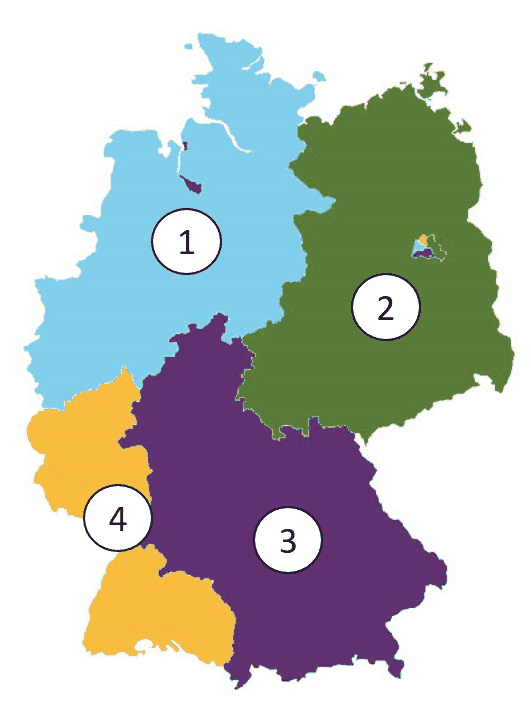

General Questions 151-180
Questions 151 to 180 of the official catalog. Answer first, then open the solution. Every question is bilingual and carries its own vocabulary table.
Frage 151
Frage: Wer baute die Mauer in Berlin?
English: Who built the Berlin Wall?
| # | Antwort | English |
|---|---|---|
| a | Großbritannien | Great Britain |
| b | die DDR | the GDR |
| c | die Bundesrepublik Deutschland | the Federal Republic of Germany |
| d | die USA | the USA |
Lösung / Answer - open after you have chosen
b) die DDR
the GDR
Warum / Why: The GDR (East Germany) built the Berlin Wall in 1961 to stop mass emigration to the West.
Wortschatz / Vocabulary
| Deutsch | English |
|---|---|
| bauen | to build |
| Mauer | the Wall |
| Ddr | the GDR (East Germany) |
| Großbritannien | Great Britain |
| Bundesrepublik | the Federal Republic |
| Deutschland | Germany |
Frage 152
Frage: Wann waren die Nationalsozialisten mit Adolf Hitler in Deutschland an der Macht?
English: When were the National Socialists with Adolf Hitler in power in Germany?
| # | Antwort | English |
|---|---|---|
| a | 1918 bis 1923 | 1918 to 1923 |
| b | 1932 bis 1950 | 1932 to 1950 |
| c | 1933 bis 1945 | 1933 to 1945 |
| d | 1945 bis 1989 | 1945 to 1989 |
Lösung / Answer - open after you have chosen
c) 1933 bis 1945
1933 to 1945
Warum / Why: The Nazi regime held power from 1933 (Hitler's appointment as Chancellor) to 1945 (Germany's defeat in WWII).
Wortschatz / Vocabulary
| Deutsch | English |
|---|---|
| Nationalsozialist | the National Socialist |
| Deutschland | Germany |
| Macht | the power |
Frage 153
Frage: Was war am 8. Mai 1945?
English: What happened on May 8, 1945?
| # | Antwort | English |
|---|---|---|
| a | Tod Adolf Hitlers | Death of Adolf Hitler |
| b | Beginn des Berliner Mauerbaus | Start of the Berlin Wall's construction |
| c | Wahl von Konrad Adenauer zum Bundeskanzler | Election of Konrad Adenauer as Chancellor |
| d | Ende des Zweiten Weltkriegs in Europa | End of WWII in Europe |
Lösung / Answer - open after you have chosen
d) Ende des Zweiten Weltkriegs in Europa
End of WWII in Europe
Warum / Why: May 8, 1945 marks Germany's unconditional surrender, ending World War II in Europe.
Wortschatz / Vocabulary
| Deutsch | English |
|---|---|
| Mai | May |
| Ende | the end |
| Zweit | second |
| Weltkrieg | the world war |
| Europa | Europe |
| Tod | death |
| Beginn | the beginning |
| Berliner | the Berliner (person from Berlin) |
| Wahl | the election |
| Bundeskanzler | the Federal Chancellor |
Frage 154
Frage: Wann war der Zweite Weltkrieg zu Ende?
English: When did World War II end?
| # | Antwort | English |
|---|---|---|
| a | 1933 | 1933 |
| b | 1945 | 1945 |
| c | 1949 | 1949 |
| d | 1961 | 1961 |
Lösung / Answer - open after you have chosen
b) 1945
1945
Warum / Why: World War II ended in 1945.
Wortschatz / Vocabulary
| Deutsch | English |
|---|---|
| Zweite | second |
| Weltkrieg | the world war |
| Ende | the end |
Frage 155
Frage: Wann waren die Nationalsozialisten in Deutschland an der Macht?
English: When were the National Socialists in power in Germany?
| # | Antwort | English |
|---|---|---|
| a | 1888 bis 1918 | 1888 to 1918 |
| b | 1921 bis 1934 | 1921 to 1934 |
| c | 1933 bis 1945 | 1933 to 1945 |
| d | 1949 bis 1963 | 1949 to 1963 |
Lösung / Answer - open after you have chosen
c) 1933 bis 1945
1933 to 1945
Warum / Why: The Nazi regime governed Germany from 1933 to 1945.
Wortschatz / Vocabulary
| Deutsch | English |
|---|---|
| Nationalsozialist | the National Socialist |
| Deutschland | Germany |
| Macht | the power |
Frage 156
Frage: In welchem Jahr wurde Hitler Reichskanzler?
English: In what year did Hitler become Reich Chancellor?
| # | Antwort | English |
|---|---|---|
| a | 1923 | 1923 |
| b | 1927 | 1927 |
| c | 1933 | 1933 |
| d | 1936 | 1936 |
Lösung / Answer - open after you have chosen
c) 1933
1933
Warum / Why: Hitler became Reich Chancellor in 1933, appointed by President Hindenburg.
Wortschatz / Vocabulary
| Deutsch | English |
|---|---|
| Jahr | the year |
| Reichskanzler | the Reich Chancellor |
Frage 157
Frage: Die Nationalsozialisten mit Adolf Hitler errichteten 1933 in Deutschland …
English: In 1933, the National Socialists with Adolf Hitler established in Germany …
| # | Antwort | English |
|---|---|---|
| a | eine Diktatur. | a dictatorship. |
| b | einen demokratischen Staat. | a democratic state. |
| c | eine Monarchie. | a monarchy. |
| d | ein Fürstentum. | a principality. |
Lösung / Answer - open after you have chosen
a) eine Diktatur.
a dictatorship.
Warum / Why: The Nazis established a dictatorship, abolishing democratic institutions and civil liberties.
Wortschatz / Vocabulary
| Deutsch | English |
|---|---|
| Nationalsozialist | the National Socialist |
| errichten | to establish |
| Deutschland | Germany |
| Diktatur | the dictatorship |
| demokratisch | democratic |
| Staat | the state |
| Monarchie | the monarchy |
| Fürstentum | the principality |
Frage 158
Frage: Das "Dritte Reich" war eine …
English: The "Third Reich" was a …
| # | Antwort | English |
|---|---|---|
| a | Diktatur. | Dictatorship. |
| b | Demokratie. | Democracy. |
| c | Monarchie. | Monarchy. |
| d | Räterepublik. | Council republic. |
Lösung / Answer - open after you have chosen
a) Diktatur.
Dictatorship.
Warum / Why: The "Third Reich" (Nazi Germany, 1933-1945) was a dictatorship under Hitler.
Wortschatz / Vocabulary
| Deutsch | English |
|---|---|
| Dritte | third |
| Reich | the empire |
| Diktatur | the dictatorship |
| Demokratie | democracy |
| Monarchie | the monarchy |
| Räterepublik | the council republic |
Frage 159
Frage: Was gab es in Deutschland nicht während der Zeit des Nationalsozialismus?
English: What did NOT exist in Germany during the Nazi era?
| # | Antwort | English |
|---|---|---|
| a | freie Wahlen | free elections |
| b | Pressezensur | press censorship |
| c | willkürliche Verhaftungen | arbitrary arrests |
| d | Verfolgung von Juden | persecution of Jews |
Lösung / Answer - open after you have chosen
a) freie Wahlen
free elections
Warum / Why: Free elections did NOT exist under Nazi rule - censorship, arbitrary arrests, and persecution were widespread instead.
Wortschatz / Vocabulary
| Deutsch | English |
|---|---|
| geben | to give |
| Deutschland | Germany |
| während | during |
| Zeit | the time |
| Nationalsozialismus | National Socialism |
| frei | free |
| Wahlen | the elections |
| Pressezensur | censorship of the press |
| Verfolgung | the persecution |
| Jude | the Jew |
Frage 160
Frage: Welcher Krieg dauerte von 1939 bis 1945?
English: Which war lasted from 1939 to 1945?
| # | Antwort | English |
|---|---|---|
| a | der Erste Weltkrieg | World War I |
| b | der Zweite Weltkrieg | World War II |
| c | der Vietnamkrieg | the Vietnam War |
| d | der Golfkrieg | the Gulf War |
Lösung / Answer - open after you have chosen
b) der Zweite Weltkrieg
World War II
Warum / Why: World War II lasted from 1939 to 1945.
Wortschatz / Vocabulary
| Deutsch | English |
|---|---|
| Krieg | the war |
| dauern | to last |
| Zweite | second |
| Weltkrieg | the world war |
| Erst | first |
Frage 161
Frage: Was kennzeichnete den NS-Staat? Eine Politik …
English: What characterized the Nazi state? A policy …
| # | Antwort | English |
|---|---|---|
| a | des staatlichen Rassismus | of state racism |
| b | der Meinungsfreiheit | of freedom of speech |
| c | der allgemeinen Religionsfreiheit | of general freedom of religion |
| d | der Entwicklung der Demokratie | of developing democracy |
Lösung / Answer - open after you have chosen
a) des staatlichen Rassismus
of state racism
Warum / Why: State racism was a defining feature of the Nazi regime, underpinning its persecution policies - the opposite of free speech, religious freedom, or democracy.
Wortschatz / Vocabulary
| Deutsch | English |
|---|---|
| Politik | politics |
| staatlich | state |
| Rassismus | the racism |
| Meinungsfreiheit | freedom of speech |
| allgemein | general |
| Religionsfreiheit | freedom of religion |
| Entwicklung | the development |
| Demokratie | democracy |
Frage 162
Frage: Claus Schenk Graf von Stauffenberg wurde bekannt durch …
English: Claus Schenk Graf von Stauffenberg became known for …
| # | Antwort | English |
|---|---|---|
| a | eine Goldmedaille bei den Olympischen Spielen 1936. | a gold medal at the 1936 Olympics. |
| b | den Bau des Reichstagsgebäudes. | building the Reichstag building. |
| c | den Aufbau der Wehrmacht. | building up the Wehrmacht. |
| d | das Attentat auf Hitler am 20. Juli 1944. | the assassination attempt on Hitler on July 20, 1944. |
Lösung / Answer - open after you have chosen
d) das Attentat auf Hitler am 20. Juli 1944.
the assassination attempt on Hitler on July 20, 1944.
Warum / Why: Stauffenberg led the failed July 20, 1944 assassination attempt on Hitler, a key act of German resistance to Nazism.
Wortschatz / Vocabulary
| Deutsch | English |
|---|---|
| Graf | the count |
| bekannt | well-known |
| Attentat | the assassination attempt |
| Juli | July |
| Goldmedaille | the gold medal |
| Spielen | to play |
| Bauen | to build |
| Aufbau | the structure |
Frage 163
Frage: In welchem Jahr zerstörten die Nationalsozialisten Synagogen und jüdische Geschäfte in Deutschland?
English: In what year did the National Socialists destroy synagogues and Jewish businesses in Germany?
| # | Antwort | English |
|---|---|---|
| a | 1925 | 1925 |
| b | 1930 | 1930 |
| c | 1938 | 1938 |
| d | 1945 | 1945 |
Lösung / Answer - open after you have chosen
c) 1938
1938
Warum / Why: The Nazis destroyed synagogues and Jewish businesses across Germany in 1938, during the November Pogrom (Kristallnacht) on November 9, 1938.
Wortschatz / Vocabulary
| Deutsch | English |
|---|---|
| Jahr | the year |
| zerstören | to destroy |
| Nationalsozialist | the National Socialist |
| Synagoge | the synagogue |
| jüdisch | Jewish |
| Geschäft | the shop / business |
| Deutschland | Germany |
Frage 164
Frage: Was passierte am 9. November 1938 in Deutschland?
English: What happened on November 9, 1938 in Germany?
| # | Antwort | English |
|---|---|---|
| a | Mit dem Angriff auf Polen beginnt der Zweite Weltkrieg. | World War II begins with the attack on Poland. |
| b | Die Nationalsozialisten verlieren eine Wahl und lösen den Reichstag auf. | The Nazis lose an election and dissolve the Reichstag. |
| c | Jüdische Geschäfte und Synagogen werden durch Nationalsozialisten und ihre Anhänger zerstört. | Jewish businesses and synagogues are destroyed by Nazis and their supporters. |
| d | Hitler wird Reichspräsident und lässt alle Parteien verbieten. | Hitler becomes Reich President and bans all parties. |
Lösung / Answer - open after you have chosen
c) Jüdische Geschäfte und Synagogen werden durch Nationalsozialisten und ihre Anhänger zerstört.
Jewish businesses and synagogues are destroyed by Nazis and their supporters.
Warum / Why: November 9, 1938 was the November Pogrom ("Kristallnacht"), when Nazis and supporters destroyed Jewish synagogues and businesses across Germany.
Wortschatz / Vocabulary
| Deutsch | English |
|---|---|
| Deutschland | Germany |
| Jüdisch | Jewish |
| Geschäft | the shop / business |
| Synagoge | the synagogue |
| Nationalsozialist | the National Socialist |
| Anhänger | the supporter |
| zerstören | to destroy |
| Angriff | the attack |
| Polen | Poland |
| beginnen | to begin |
| Zweite | second |
| Weltkrieg | the world war |
Frage 165
Frage: Wie hieß der erste Bundeskanzler der Bundesrepublik Deutschland?
English: What was the name of the first Federal Chancellor of Germany?
| # | Antwort | English |
|---|---|---|
| a | Konrad Adenauer | Konrad Adenauer |
| b | Kurt Georg Kiesinger | Kurt Georg Kiesinger |
| c | Helmut Schmidt | Helmut Schmidt |
| d | Willy Brandt | Willy Brandt |
Lösung / Answer - open after you have chosen
a) Konrad Adenauer
Konrad Adenauer
Warum / Why: Konrad Adenauer was the first Federal Chancellor of West Germany, serving from 1949 to 1963.
Wortschatz / Vocabulary
| Deutsch | English |
|---|---|
| heißen | to be called |
| erst | first |
| Bundeskanzler | the Federal Chancellor |
| Bundesrepublik | the Federal Republic |
| Deutschland | Germany |
Frage 166
Frage: Bei welchen Demonstrationen in Deutschland riefen die Menschen "Wir sind das Volk"?
English: At which demonstrations in Germany did people chant "We are the people"?
| # | Antwort | English |
|---|---|---|
| a | beim Arbeiteraufstand 1953 in der DDR | at the 1953 workers' uprising in the GDR |
| b | bei den Demonstrationen 1968 in der Bundesrepublik Deutschland | at the 1968 demonstrations in West Germany |
| c | bei den Anti-Atomkraft-Demonstrationen 1985 in der Bundesrepublik Deutschland | at the 1985 anti-nuclear demonstrations in West Germany |
| d | bei den Montagsdemonstrationen 1989 in der DDR | at the 1989 Monday demonstrations in the GDR |
Lösung / Answer - open after you have chosen
d) bei den Montagsdemonstrationen 1989 in der DDR
at the 1989 Monday demonstrations in the GDR
Warum / Why: The 1989 Monday demonstrations (Montagsdemonstrationen) in the GDR, especially in Leipzig, were key to the Peaceful Revolution that led to the Wall's fall.
Wortschatz / Vocabulary
| Deutsch | English |
|---|---|
| Demonstration | the demonstration |
| Deutschland | Germany |
| Mensch | the human being |
| Volk | the people |
| Ddr | the GDR (East Germany) |
| Bundesrepublik | the Federal Republic |
Frage 167
Frage: Welche Länder wurden nach dem Zweiten Weltkrieg in Deutschland als "Alliierte Besatzungsmächte" bezeichnet?
English: Which countries were called the "Allied occupying powers" in Germany after WWII?
| # | Antwort | English |
|---|---|---|
| a | Sowjetunion, Großbritannien, Polen, Schweden | Soviet Union, Great Britain, Poland, Sweden |
| b | Frankreich, Sowjetunion, Italien, Japan | France, Soviet Union, Italy, Japan |
| c | USA, Sowjetunion, Spanien, Portugal | USA, Soviet Union, Spain, Portugal |
| d | USA, Sowjetunion, Großbritannien, Frankreich | USA, Soviet Union, Great Britain, France |
Lösung / Answer - open after you have chosen
d) USA, Sowjetunion, Großbritannien, Frankreich
USA, Soviet Union, Great Britain, France
Warum / Why: The four Allied occupying powers were the USA, Soviet Union, Great Britain, and France, each administering a zone of postwar Germany.
Wortschatz / Vocabulary
| Deutsch | English |
|---|---|
| Land | the country / federal state |
| Zweit | second |
| Weltkrieg | the world war |
| Deutschland | Germany |
| Alliierte | the Allies |
| Besatzungsmacht | the occupying power |
| bezeichnen | to describe / to call |
| Sowjetunion | the Soviet Union |
| Großbritannien | Great Britain |
| Frankreich | France |
| Polen | Poland |
| Schweden | Sweden |
Frage 168
Frage: Welches Land war keine "Alliierte Besatzungsmacht" in Deutschland?
English: Which country was NOT an "Allied occupying power" in Germany?
| # | Antwort | English |
|---|---|---|
| a | USA | USA |
| b | Sowjetunion | Soviet Union |
| c | Frankreich | France |
| d | Japan | Japan |
Lösung / Answer - open after you have chosen
d) Japan
Japan
Warum / Why: Japan was not one of the four occupying powers in Germany - it was itself occupied separately after WWII.
Wortschatz / Vocabulary
| Deutsch | English |
|---|---|
| Land | the country / federal state |
| Alliierte | the Allies |
| Besatzungsmacht | the occupying power |
| Deutschland | Germany |
| Sowjetunion | the Soviet Union |
| Frankreich | France |
Frage 169
Frage: Wann wurde die Bundesrepublik Deutschland gegründet?
English: When was the Federal Republic of Germany founded?
| # | Antwort | English |
|---|---|---|
| a | 1939 | 1939 |
| b | 1945 | 1945 |
| c | 1949 | 1949 |
| d | 1951 | 1951 |
Lösung / Answer - open after you have chosen
c) 1949
1949
Warum / Why: The Federal Republic of Germany (West Germany) was founded in 1949.
Wortschatz / Vocabulary
| Deutsch | English |
|---|---|
| Bundesrepublik | the Federal Republic |
| Deutschland | Germany |
| gründen | to found |
Frage 170
Frage: Was gab es während der Zeit des Nationalsozialismus in Deutschland?
English: What existed in Germany during the Nazi era?
| # | Antwort | English |
|---|---|---|
| a | das Verbot von Parteien | the ban on political parties |
| b | das Recht zur freien Entfaltung der Persönlichkeit | the right to free personal development |
| c | Pressefreiheit | freedom of the press |
| d | den Schutz der Menschenwürde | protection of human dignity |
Lösung / Answer - open after you have chosen
a) das Verbot von Parteien
the ban on political parties
Warum / Why: The Nazi regime banned all political parties except the NSDAP - the opposite of personal freedoms, press freedom, or human dignity protections.
Wortschatz / Vocabulary
| Deutsch | English |
|---|---|
| geben | to give |
| während | during |
| Zeit | the time |
| Nationalsozialismus | National Socialism |
| Deutschland | Germany |
| Verbot | the ban |
| Partei | the party |
| Recht | the right |
| frei | free |
| Entfaltung | the development |
| Persönlichkeit | the personality |
| Pressefreiheit | freedom of the press |
Frage 171
Frage: Soziale Marktwirtschaft bedeutet, die Wirtschaft …
English: Social market economy means the economy …
| # | Antwort | English |
|---|---|---|
| a | steuert sich allein nach Angebot und Nachfrage. | is regulated solely by supply and demand. |
| b | wird vom Staat geplant und gesteuert, Angebot und Nachfrage werden nicht berücksichtigt. | is planned and controlled by the state, disregarding supply and demand. |
| c | richtet sich nach der Nachfrage im Ausland. | is oriented toward foreign demand. |
| d | richtet sich nach Angebot und Nachfrage, aber der Staat sorgt für einen sozialen Ausgleich. | follows supply and demand, but the state ensures social balance. |
Lösung / Answer - open after you have chosen
d) richtet sich nach Angebot und Nachfrage, aber der Staat sorgt für einen sozialen Ausgleich.
follows supply and demand, but the state ensures social balance.
Warum / Why: The social market economy combines free-market principles with state-provided social welfare, balancing efficiency and social equity.
Wortschatz / Vocabulary
| Deutsch | English |
|---|---|
| Sozial | social |
| Marktwirtschaft | the market economy |
| bedeuten | to mean |
| Wirtschaft | the economy |
| richten | to direct / to judge |
| Angebot | the offer |
| Nachfrage | the demand |
| Staat | the state |
| sorgen | to take care of |
| Ausgleich | the compensation |
| steuern | to control / to steer |
| Ausland | the foreign country |
Frage 172
Frage: In welcher Besatzungszone wurde die DDR gegründet? In der …
English: In which occupation zone was the GDR founded? In the …
| # | Antwort | English |
|---|---|---|
| a | amerikanischen Besatzungszone | American occupation zone. |
| b | französischen Besatzungszone | French occupation zone. |
| c | britischen Besatzungszone | British occupation zone. |
| d | sowjetischen Besatzungszone | Soviet occupation zone. |
Lösung / Answer - open after you have chosen
d) sowjetischen Besatzungszone
Soviet occupation zone.
Warum / Why: The GDR (East Germany) was founded in the Soviet occupation zone in 1949.
Wortschatz / Vocabulary
| Deutsch | English |
|---|---|
| Besatzungszone | the occupation zone |
| Ddr | the GDR (East Germany) |
| gründen | to found |
| sowjetisch | Soviet |
| amerikanisch | American |
| französisch | French |
Frage 173
Frage: Die Bundesrepublik Deutschland ist ein Gründungsmitglied …
English: The Federal Republic of Germany is a founding member of the …
| # | Antwort | English |
|---|---|---|
| a | des Nordatlantikpakts (NATO). | North Atlantic Treaty (NATO). |
| b | der Vereinten Nationen (VN). | United Nations (UN). |
| c | der Europäischen Union (EU). | European Union (EU). |
| d | des Warschauer Pakts. | Warsaw Pact. |
Lösung / Answer - open after you have chosen
c) der Europäischen Union (EU).
European Union (EU).
Warum / Why: West Germany was a founding member of the European Economic Community, predecessor of the EU - not NATO's founding roster (joined 1955), the UN (joined 1973), or the Warsaw Pact (an Eastern Bloc alliance).
Wortschatz / Vocabulary
| Deutsch | English |
|---|---|
| Bundesrepublik | the Federal Republic |
| Deutschland | Germany |
| Gründungsmitglied | the founding member |
| Europäisch | European |
| Vereinen | to unite |
| Nation | the nation |
| Pakt | the pact |
Frage 174
Frage: Wann wurde die DDR gegründet?
English: When was the GDR founded?
| # | Antwort | English |
|---|---|---|
| a | 1947 | 1947 |
| b | 1949 | 1949 |
| c | 1953 | 1953 |
| d | 1956 | 1956 |
Lösung / Answer - open after you have chosen
b) 1949
1949
Warum / Why: The GDR (East Germany) was founded in 1949, the same year as West Germany.
Wortschatz / Vocabulary
| Deutsch | English |
|---|---|
| Ddr | the GDR (East Germany) |
| gründen | to found |
Frage 175
Frage: Wie viele Besatzungszonen gab es in Deutschland nach dem Zweiten Weltkrieg?
English: How many occupation zones existed in Germany after WWII?
| # | Antwort | English |
|---|---|---|
| a | 3 | 3 |
| b | 4 | 4 |
| c | 5 | 5 |
| d | 6 | 6 |
Lösung / Answer - open after you have chosen
b) 4
4
Warum / Why: There were 4 occupation zones, administered by the USA, Soviet Union, Great Britain, and France.
Wortschatz / Vocabulary
| Deutsch | English |
|---|---|
| Besatzungszone | the occupation zone |
| geben | to give |
| Deutschland | Germany |
| Zweit | second |
| Weltkrieg | the world war |
Frage 176
Frage: Wie waren die Besatzungszonen Deutschlands nach 1945 verteilt?
English: How were Germany's occupation zones divided after 1945?

| # | Antwort | English |
|---|---|---|
| a | 1=Großbritannien, 2=Sowjetunion, 3=Frankreich, 4=USA | 1=Great Britain, 2=Soviet Union, 3=France, 4=USA |
| b | 1=Sowjetunion, 2=Großbritannien, 3=USA, 4=Frankreich | 1=Soviet Union, 2=Great Britain, 3=USA, 4=France |
| c | 1=Großbritannien, 2=Sowjetunion, 3=USA, 4=Frankreich | 1=Great Britain, 2=Soviet Union, 3=USA, 4=France |
| d | 1=Großbritannien, 2=USA, 3=Sowjetunion, 4=Frankreich | 1=Great Britain, 2=USA, 3=Soviet Union, 4=France |
Lösung / Answer - open after you have chosen
c) 1=Großbritannien, 2=Sowjetunion, 3=USA, 4=Frankreich
1=Great Britain, 2=Soviet Union, 3=USA, 4=France
Warum / Why: After 1945 Germany was divided into four occupation zones: 1 = Great Britain in the north-west, 2 = the Soviet Union in the east, 3 = the USA in the south-east (Bavaria and Hesse), 4 = France in the south-west. The zones were agreed at the Potsdam Conference and became the basis of the later division into East and West Germany.
Wortschatz / Vocabulary
| Deutsch | English |
|---|---|
| Besatzungszone | the occupation zone |
| Großbritannien | Great Britain |
| Sowjetunion | the Soviet Union |
| Frankreich | France |
Frage 177
Frage: Welche deutsche Stadt wurde nach dem Zweiten Weltkrieg in vier Sektoren aufgeteilt?
English: Which German city was divided into four sectors after WWII?
| # | Antwort | English |
|---|---|---|
| a | München | Munich |
| b | Berlin | Berlin |
| c | Dresden | Dresden |
| d | Frankfurt/Oder | Frankfurt/Oder |
Lösung / Answer - open after you have chosen
b) Berlin
Berlin
Warum / Why: Berlin, though located within the Soviet zone, was itself divided into four Allied sectors.
Wortschatz / Vocabulary
| Deutsch | English |
|---|---|
| deutsch | German |
| Stadt | the city |
| Zweit | second |
| Weltkrieg | the world war |
| vier | four |
| aufteilen | to divide |
| München | Munich |
Frage 178
Frage: Vom Juni 1948 bis zum Mai 1949 wurden die Bürgerinnen und Bürger von West-Berlin durch eine Luftbrücke versorgt. Welcher Umstand war dafür verantwortlich?
English: From June 1948 to May 1949, West Berlin's citizens were supplied via an airlift. What was responsible for this?
| # | Antwort | English |
|---|---|---|
| a | Für Frankreich war eine Versorgung der West-Berliner Bevölkerung mit dem Flugzeug kostengünstiger. | Airplane supply was cheaper for France. |
| b | Die amerikanischen Soldatinnen und Soldaten hatten beim Landtransport Angst vor Überfällen. | American soldiers feared ambushes during land transport. |
| c | Für Großbritannien war die Versorgung über die Luftbrücke schneller. | The airlift was faster for Great Britain. |
| d | Die Sowjetunion unterbrach den gesamten Verkehr auf dem Landwege. | The Soviet Union cut off all land transport. |
Lösung / Answer - open after you have chosen
d) Die Sowjetunion unterbrach den gesamten Verkehr auf dem Landwege.
The Soviet Union cut off all land transport.
Warum / Why: The Soviet Union blockaded all land access to West Berlin, forcing the Western Allies to supply the city entirely by air (the Berlin Airlift).
Wortschatz / Vocabulary
| Deutsch | English |
|---|---|
| Juni | June |
| Mai | May |
| Bürger | the citizen |
| Luftbrücke | the airlift |
| versorgen | to provide for |
| dafür | for that |
| verantwortlich | responsible |
| Sowjetunion | the Soviet Union |
| unterbrechen | to interrupt |
| gesamt | total |
| Verkehr | the traffic |
| Landweg | the land route |
Frage 179
Frage: Wie endete der Zweite Weltkrieg in Europa offiziell?
English: How did WWII officially end in Europe?
| # | Antwort | English |
|---|---|---|
| a | mit dem Tod Adolf Hitlers | with the death of Adolf Hitler |
| b | durch die bedingungslose Kapitulation Deutschlands | through Germany's unconditional surrender |
| c | mit dem Rückzug der Deutschen aus den besetzten Gebieten | with the German withdrawal from occupied territories |
| d | durch eine Revolution in Deutschland | through a revolution in Germany |
Lösung / Answer - open after you have chosen
b) durch die bedingungslose Kapitulation Deutschlands
through Germany's unconditional surrender
Warum / Why: WWII in Europe officially ended with Germany's unconditional surrender on May 8, 1945 - Hitler's death alone did not end the war.
Wortschatz / Vocabulary
| Deutsch | English |
|---|---|
| Zweite | second |
| Weltkrieg | the world war |
| Europa | Europe |
| offiziell | official |
| bedingungslos | unconditional |
| Kapitulation | the surrender |
| Tod | death |
| Rückzug | the withdrawal |
| Deutsch | German |
| besetzen | to occupy |
| Gebiet | the area |
| Deutschland | Germany |
Frage 180
Frage: Der erste Bundeskanzler der Bundesrepublik Deutschland war …
English: The first Federal Chancellor of Germany was …
| # | Antwort | English |
|---|---|---|
| a | Ludwig Erhard. | Ludwig Erhard. |
| b | Willy Brandt. | Willy Brandt. |
| c | Konrad Adenauer. | Konrad Adenauer. |
| d | Gerhard Schröder. | Gerhard Schröder. |
Lösung / Answer - open after you have chosen
c) Konrad Adenauer.
Konrad Adenauer.
Warum / Why: Konrad Adenauer was the first Federal Chancellor, serving 1949-1963.
Wortschatz / Vocabulary
| Deutsch | English |
|---|---|
| erst | first |
| Bundeskanzler | the Federal Chancellor |
| Bundesrepublik | the Federal Republic |
| Deutschland | Germany |
Set check
- I answered all 30 questions before opening any solution.
- I scored at least 24/30.
- I reviewed every wrong answer and said the correct sentence aloud.